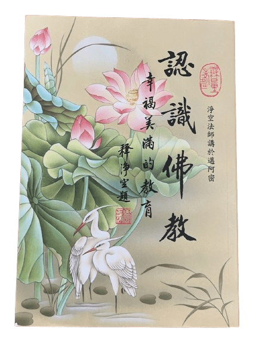

淨空法師《認識佛教》筆記

《認識佛教》淨空法師講於邁阿密。公元二〇一八年六月恭印一〇〇〇本。正文二二〇頁。
- 佛教是佛陀對九法界眾生至善圓滿的教育。
- 釋迦四十九年所說的一切經，內容就是說明宇宙人生的真相。
人生就是自己，宇宙就是我們生活的環境。
- 知覺名菩薩，不覺名凡夫。
- 修行就是將我們對宇宙人生錯誤的看法、想法、說法、做法，加以修正。
- 佛教的修行綱領是覺、正、淨。
覺而不迷，正而不邪，淨而不染。並依戒、定、慧三學，以求達到此目的。
- 修學的基礎是三福，待人依六和，處世修六度，遵普賢願，歸心淨土。佛之教化能事畢矣。
一、什麼是佛法？
二、什麼是佛教？
三、現代的變體佛教
四、佛陀教育的目標
五、佛陀教育之入門《地藏經》
六、佛法修學五大科目
七、佛法的修學次第
附、《認識佛教》復習練習
一、什麼是佛法？
佛陀意思是「智慧、覺悟」。智慧為體，覺悟為用。
從體上講，智有三種，佛陀皆具足：
- 一切智： 用哲學術語，正確了解宇宙的本體的智慧。
- 道種智： 能夠正確明瞭宇宙萬象的智慧。宇宙間無量無邊的現象，如何產生？從何而來？現象、過程如何？後來結果如何？
- 一切種智：對宇宙人生的真相究竟圓滿的明瞭，沒有一絲毫的迷惑，也沒有一絲毫的差誤。
智慧起作用就是大覺。覺也有三類：
- 自覺。自己覺悟了（小乘阿羅漢、辟支佛的境界）。
- 覺他。能幫助別人覺悟（菩薩的境界）。
- 究竟圓滿的覺悟（佛的境界）。如此智慧德能，「覺」就是它的德性、它的作用，一切眾生本自具足。
九界眾生「但以妄想、執著而不能證得」。
大智大覺的對象就是無盡時空裡所包含的一切萬事萬物。佛稱之為「法」。
- 佛法就是無盡的智慧、覺悟，覺了宇宙人生的一切萬事萬法。
- 所覺的對象沒有邊際；能覺的智慧也沒有邊際。這無量無邊的智覺是自己的本能。
- 我們本能的智覺與智覺的對象是一不是二。
若「能知」與「所知」是對立的，則智與覺就難以為圓滿；只能是有限的。
「能知、能覺」與「所知、所覺」是一不是二，就是佛法裡講的「一真法界」。
二、什麼是佛教？
佛教是佛陀對九法界眾生至善圓滿的教育。教育內涵包括了無盡無邊的事理。佛法是三世的教育，講過去、現在、未來。
佛教是教育，不是宗教。可從稱呼及佛教道場的組織中驗證。
三、現代的變體佛教
- 傳統佛教
- 宗教的佛教
- 佛學
- 邪門外道的佛教
- （擺設：觀光旅遊）
四、佛陀教育的目標
（一）佛教的學位制度
佛教教學的總目標是「阿耨多羅三藐三菩提」，意為無上正等正覺。分三個階段：正覺，正等正覺，無上正等正覺。
- 凡夫無論知道多少，因未斷煩惱，還有貪、嗔、癡，還有是非、人我，故非聖人，不能稱為正覺。
- 若貪、嗔、癡、慢、是非、人我、煩惱都斷盡了，佛承認此人是「正覺」，得到「正覺」學位，叫做阿羅漢。
- 「正等正覺」的「等」是等於佛，即他用的心跟佛的一樣，但還沒有成佛。修得「正等正覺」就成為菩薩。
阿羅漢用的心跟凡夫一樣，叫做「識心」，不是真心，是假的、妄心，但已斷了煩惱。菩薩用心是真心，真心永遠不變。
- 佛證得的「無上正等正覺」是真心圓證。
（二）佛教的教學目標
- 當下「破迷開悟，離苦得樂」。
- 未來斷煩惱、出三界。
五、佛陀教育之入門《地藏經》
（一）大圓滿
世尊在地藏法會上一開始就大放光明，表講經說法、為我們說明宇宙人生真相的依據。
（略說十種；十代表圓滿。前五原理，後五原則。）
- 大圓滿光明雲。
密宗「大圓滿」就是顯宗「真如自性」。真心、第一義諦，都是此義。其餘九種都是說明大圓滿。
樣樣圓滿，事事圓滿，無一不圓滿，才叫大圓滿。釋迦摩尼佛為眾生說的法，根本就是大圓滿法。
- 大慈悲光明雲。
佛菩薩不要名，不為利，無止境地在十方世界教化無量無邊的眾生；他們的動力就是慈悲。
大慈大悲是平等的、無條件的、無比強大的。
- 大智慧光明雲。
慈悲須建立在理性的基礎上。「慈悲為本，方便為門」。失去理性，感情用事，慈悲就成禍害，「慈悲多禍害，方便出下流」。
智慧就是方便法，以種種不同方法手段，加上大慈大悲的力量，幫眾生破迷開悟、離苦得樂。
- 大般若光明雲。
「般若無知，無所不知」。前者是體，後者即「智慧」、是用。
能說明宇宙現象的叫「智慧」；能斷煩惱、破無明的叫「般若」，所以是「根本智」，而前者是「後得智」，出生於根本智。
只有無知的般若才能斷盡煩惱、破盡無明，證得自性的大圓滿、恢復自性本具之無所不知、無所不能的智慧和能力。
- 大三昧光明雲。
智慧是我們的本能，自性本具、本有的；由於迷而丟失了。破迷、恢復本具的智慧，佛教我們一個方法：禪定，即「三昧」。
修行是修正行為。行為歸為三類：身、口、意，所謂三業。修行要從根本修；心是根本，起心動念是根本。要從心地修起。
三昧就是「心定」，是佛家修學的樞紐。戒、定、慧三學，因戒得定，因定開慧。
- 大吉祥光明雲。
本分應得到的得到了，是為「吉祥」；不該得的得到了，就不吉祥。
「大吉祥」者，即是盡虛空遍法界，無論是理論、現象，都是我們應該知道的。
念佛一心想生極樂世界，則極樂世界依正莊嚴是你該享受的。
佛「契機契理」的說法，讓我們得到最大的利益，最為吉祥，是大吉祥。
- 大福德光明雲。
眾生眼前希望得到的是福德。未來得大福德。福德是果報，之前必要修因。
- 大功德光明雲。
功德才是真實的。戒、定、慧三學屬於功德。佛法真正要教給我們的是福、慧雙修。
沒有福報不能度眾生。
- 大歸依光明雲。
修行必須有方法；方法最重要者是標準。這個標準就是「大歸依」，是皈依大圓滿的自性，是圓滿的自性三寶。
- 大讚歎光明雲。
讚歎就是教化眾生。讚歎自性圓滿的功德、無量的功德。佛法就是教我們要證得圓滿的自性。
佛所說的經論，無一不是從「大圓滿」流露而宣說出來。前五句是大圓滿的自性，後五句是自性的起用，也就是大圓滿的作用。
（二）大乘圓滿法：地藏、觀音、文殊、普賢
大乘佛法的修學次第以四大菩薩作代表，代表整個佛法：
- 地藏：孝敬（心地）
以大地比喻心地；後者是真正的大圓滿，本來具足無量的慈悲、智慧、般若、吉祥、福德。
入佛門最初的修學方法是「孝親敬師」，因為佛陀教育是「師道」，建立在「孝道」之上。
「孝道」是「大圓滿」的大根大本，一切圓滿由此開始。
- 觀音：大慈
將孝敬擴大到虛空法界一切眾生，即是觀音法門的「大慈大悲」。
- 文殊：大智
「孝、慈」不可感情用事，須以理性為基礎，由大智大慧指引，方得正面的真實好處。
- 普賢：大願大行（實踐）
將孝、敬、慈悲、智慧用在日常生活中，對人、事、物皆從心所欲均不違背，是為普賢菩薩。
誰是普賢？人人都是。普賢法門是圓滿的法門。
六、佛法修學五大科目
佛說法因人施教，無有定法，但皆不離大圓滿、由自性中流露出。法門平等、佛佛平等、經經平等；一個為主，餘皆為伴。
五大科目是：三福、六和、三學、六度、十大願王。一生遵守這個原則來修學，決定成就。
有了理論的依據、修行的方法、對人對事對物以此五科的生活態度，一心念佛、求生淨土，無不成就者。
（一）三福
「三福」是個人修行的基礎。
善男子善女人的標準：對應《觀經》三福。繼者以前者為基礎。
- 人天福：孝養父母，奉事師長，慈心不殺，修十善業。
- 孝：這個宇宙就是一個「孝」字。竪窮三際、橫遍十方。「一切男子是我父，一切女人是我母」，是為「孝道」。
- 「孝敬」是性德，唯此才能開發自性。孝親尊師。
- 孝敬擴大就是慈悲；慈悲是性德。惡業中殺業最重，故特別指出。
- 十善業是世間善法的標準。修十善業者決定不墮三惡道。
- 服住財、色、名、食、睡這五妄念，才可生初禪天。
- 二乘福：受持三皈，具足眾戒，不犯威儀。
- 小乘佛法是基於人天的，先要修好人天福。
- 入佛門須先拜師，受三皈依戒，正式拜釋迦摩尼佛為師，願意一生依教修學、修行。
老師傳授修學的總綱領：皈依佛、皈依法、皈依僧。佛者覺也，法者正也，僧者淨也。
- 真正皈依的是自性三寶：覺、正、淨。三寶是三而一，一而三。
「皈」（歸）是回頭，「依」是依靠。在六道裡無依無靠，十分可憐。
- 皈依佛：皈依自性佛、自性覺。十方三世佛都是自性變現的。真皈依是覺而不迷。
- 皈依法：皈依自性的「正知正見」或「佛知佛見」。這是自性的法寶，不是外來。正而不邪。
- 皈依僧：皈依自己的清淨心。僧者，清淨，六根清淨。淨而不染。
- 住持三寶：佛像、經書、出家人。象徵三寶住世。
- 供奉佛像，時時提醒自己皈依。
- 經書要天天念，把佛的教誨變成自己的思想、見解、言行。
- 看到出家人，會提醒自己六根清淨。這是出家人的大功德。
- 「受持三皈」是入佛門的最重要的一課，非常隆重，也非常嚴肅。若是真正接受了，學佛就從當下開始。
- 覺、正、淨這明心見性的三門，任修一門成功，則三法門都得到了。
淨、密二宗由淨門入；此門無需上根利智（覺門）或很長的路（正門）。
專念阿彌陀佛的淨土宗相較密宗，攝受更廣泛、成就更容易、更容易得清淨心。
- 三皈依要落實在生活中，真正皈依三寶，無論哪一宗皆然。
夏蓮居老居士的《淨修捷要》說：「淨宗初祖，大勢至菩薩。」（第62頁）
- 眾戒裡最重要的是五戒、根本大戒：不殺生，不偷盜，不邪淫，不妄語，不飲酒。前四為性罪；第五是遮戒。
- 出家比丘的二百五十條戒，真正的戒條只有四重十三僧殘這十七條，其餘的都是威儀。
- 佛法的實行就是戒律。戒律是正覺的生活規範。每一條戒都有開、遮、持、犯；戒律的圓滿在於詳細明瞭戒律這四方面。
- 「嚴持戒律」不僅有佛制訂的戒律，還包括國家法律、社會道德、地方風俗習慣，等等。
- 戒律的基本精神、原理是：諸惡莫作，眾善奉行。
- 大乘福：發菩提心，深信因果，讀誦大乘，勸進行者。
- 菩提心，覺悟心。覺悟什麼？人生苦；三界都苦。一定要超越三界；按佛教的方法修行，才叫真正的「發菩提心」。
- 「四弘誓願」是菩提心的具體實踐。菩薩的心是普度一切眾生，是大菩提心。
- 度生的心是大慈悲心。它有無比的力量推動你精進。
- 佛法的教育是令人開啟圓滿的智慧。
- 找不到好老師，可以找古人，做古人的私淑弟子。當五年專精一門；一門通達，便能得定、開慧。
任選一部經都可以，一門深入。這一經未通，決定不看第二部經。通者，開悟。從這一部經上得定、開慧，是為通達。
「一經通，一切經都通」。
- 四弘誓願是佛指示給我們的修學程序、過程。
- 如果想要成就無上佛道，一定要到西方極樂世界去見阿彌陀佛。《四十華嚴》普賢行願品詳細講解四弘誓願。
- 「深信因果」意思是深信「念佛是因、成佛是果」。
- 讀誦大乘者，菩薩學佛，不能一天不見佛、不能一天不讀經。
- 佛弟子最低限度是每天早、晚二課。
早課是聽佛教訓，提醒自己這一天的行為。晚課是反省、檢點，展開經典、看佛的教誨有沒有牢記、做到；若沒有，須懺悔。
過去，早晚課都一樣，念一卷阿彌陀經、三遍往生咒、佛號越多越好。彌陀經似淺實深；見彌陀經疏鈔。
或，早課無量壽經第六品（四十八願）。晚課第三十二至三十七品；這六品就是戒律，持戒念佛就與阿彌陀佛的行、解一樣。
- 淨空法師師從李炳南老師開始：《阿難問事佛吉凶經》《阿彌陀經》《普賢行願品》《金剛經》《大佛頂首楞嚴經》
每一部都是很長時間。
- 勸進行者，是勸別人學佛、幫別人精進。
（二）六和敬
「六和」是大眾共修的戒條。佛法的僧團指四個人以上，同住共修。道場建立的目的是成就每一個共修的份子。
- 見和同解：建立共識。和則平，平則安，安則樂。同則專。
- 戒和同修：同住規約，如寺廟的《常住公約》，為佛法基本戒律的超集。
- 身和同住：住在一起共修。睡廣單（通舖），比軍隊還要嚴格。只有住持有寮房，叫「方丈」。還有年老者、病者等特殊情況。
- 口和同諍：言語越少越好，非必要的言語，能不說最好。
- 意和同悅：即所謂「法喜充滿」。
- 利和同均：同修者，物質生活平等。
（三）三學
戒、定、慧三學對治造惡、散亂、愚癡三病。對應佛經三藏：
- 經藏：定學。調心。
- 律藏：戒學。調身。
- 論藏：慧學。調行。
（四）六度
從早上起床到晚上睡覺，這一天都是六波羅蜜，才叫真正的修行。波羅蜜是「究竟圓滿」的意思。
- 佈施：在日常生活中，念念為別人、不為自己，就是佈施，就是供養。
念頭不轉，凡夫；一轉，就是菩薩：覺、迷之別，一念覺與一念迷。
佈施波羅蜜：菩薩究竟圓滿的佈施，是放下、捨、助他。放下就要能捨。
捨到一切都能捨，乃至煩惱、憂慮、牽掛、生死、輪迴，才能恢復自性的清淨光明。
- 持戒：持戒、守一切法。
持戒波羅蜜：凡事有次第，佛修亦如是。當遵佛所教：發大心，斷煩惱、習氣，學法門，圓成佛道。
- 忍辱：忍耐，有耐心。《金剛經》：「一切法得成於忍。」此經中，釋迦佛特別強調佈施與忍辱。
能忍：一、人為加害；二、自然變化；三、修行、功夫未到時。
耐心是禪定的前方便，也是精進的預備工夫。
- 精進：「精」是專精、純而不雜，「進」是進步。精進的利益、功德無量無邊。
- 禪定：有世間、出世，小乘、大乘之分。「定」是修行的樞紐。
六祖釋：「禪」是外不著相，「定」是內不動心。禪定何以重要？蓋「凡所有相，皆是虛妄，一切有為法如夢幻泡影。」
《百法明門》把一切法歸為一百類，皆有為法。起心動念、打妄想也是夢幻泡影。對這些境界不起心動念，真心就恢復。
- 般若：對宇宙之間一切事物的看法跟如來一模一樣，此知見即是佛知、佛見、正知、正見，就是般若波羅蜜。
佛菩薩知道，盡虛空、遍法界一切眾生跟我們是同一體，同一個真如本性。於是有「同體大悲，無緣大慈」。
所以菩薩行是對一切法明暸、通達，於一切法不執著，盡心盡力去幫助眾生。
（五）十願
念佛至多得事一心不亂。普賢十願是成佛的法門，理一心不亂的法門，是法身大士的境界。
若六波羅蜜沒有修成，這十大願王連邊都沾不上。
普賢行的特色是心量廣大如虛空法界一樣，故而其十願個個都是究竟圓滿。
前七願是菩薩的願行，後三願是菩薩的迴向行。
- 禮敬諸佛：諸佛包括一切有情、無情。「諸佛」是從相上說。恭敬得清淨心。
- 稱讚如來：「如來」是從性上說。讚歎以性德為標準；唯善者、正法才讚歎。
- 廣修供養：一供一切供，供一尊佛就是供一切諸佛。所以一即一切，一切即一。這個心量圓滿地脫開了侷限於分別。
「一切供養中法供養為最。」法供養中，「依教修行供養」為第一。
佛法是師道，依照老師教導修學，才能獲得究竟圓滿不思議的功德利益。
阿彌陀佛名號含有無量義，也就是虛空法界的一個名號，所以它無所不包。
整部《無量壽經》是它的註解。
《大方廣佛華嚴經》是《無量壽經》的註解。
整部大藏經是《華嚴經》的註解。
這一句阿彌陀佛的功德，遠遠超過所有一切經咒。
所以依照這個法門修，推廣這個法門，「廣修供養」就圓滿做到了。
密教祖師金剛薩埵是普賢菩薩化身。準提菩薩是觀世音菩薩化身。
一切在佛菩薩是完全圓滿、自在、平等、無有分別。任何法門都回歸本家，見到阿彌陀佛。
- 懺悔業障：起心動念就造業，於是必生障礙，障了我們的本性。
障礙分兩種：煩惱障、所知障。妄想是所知障的根；執著是煩惱障的根。破二障即見佛性。
「懺悔業障」是佛法修學的關鍵、樞紐。
淨土法門最特殊，可以帶業往生；否則何來四土、三輩、九品。
消業也好；只要真正發願改過自新，念一句「阿彌陀佛」佛號，求生淨土，業障就消除掉了。
念佛一定要心跟佛心一樣；願，跟佛願一樣。如此才是真心念佛，才能消除一切罪障。
- 隨喜功德：對治嫉妒。而且，當「成人之美，成人之善」。當知成就別人就是成就自己。
教人留一手，是為「吝法」，得愚癡的果報。
- 請轉法輪：是真正報佛恩，是把佛的願望實現。
佛願是希望每個眾生都能聞到正法、以佛法修學、早日圓成佛道。
念經功德已大；講經更甚遠矣。
佛教導「以苦為師」。常生活在痛苦當中，才有真正的道心、堅定的念頭要超越這個世間。
- 請佛住世：「請轉法輪」的指宣傳佛教；
「請佛住世」使人得長期薰修，使佛法在一地生根、茁壯、開花、結果，才能成就。
- 常隨佛學：以佛為修學榜樣。依照佛的經典修行，就是常隨佛學。
- 恆順眾生：恆順法界一切有情眾生。「孝順」；不順就不孝了。
恆順中觀察機緣，誘導眾生斷惡修善，助其破迷開悟。當有智慧、善巧、方便，才能恆順。
- 普皆迴向：將所修、所學之功德毫髮都不保留，全部迴向給法界一切眾生、迴向菩提、迴向十界，
拓開自己心量、盡虛空遍法界就是一個自己，如此境界才是真正大圓滿。
七、佛法的修學次第
（一）信解行證
佛法修學可分四個階段，依次進行：信、解、行、證。
- 信：能信，緣成熟了。表示可以入門。
第一、信己。信自己本來與諸佛如來無二無別，信自己真性被染污，信自己能除去染污、恢復自性。
第二、信他。信佛法。信佛法的理論、修行方法，依教修行，定能成就。
蕅益大師又擴展到信「理」、信「事」。事從理來；理是清淨心、真如本性。一切萬象皆從理顯現；有因有果。
- 解：理解宇宙人生真相。之後方可修行。
- 行：有理論基礎、正確的修行方法，進行修行；目標是要「證」。
- 證：所信、所解、所行，在日常生活中統統用著、融合，所行、所想皆是經典內容。是為「證」，叫做「真如」。
（二）戒、定、慧齊修
讀經就是「眾善奉行」。專心、不夾雜念經，「戒、定、慧」齊修。
八、佛法的教學藝術
（直接閱讀。）
|